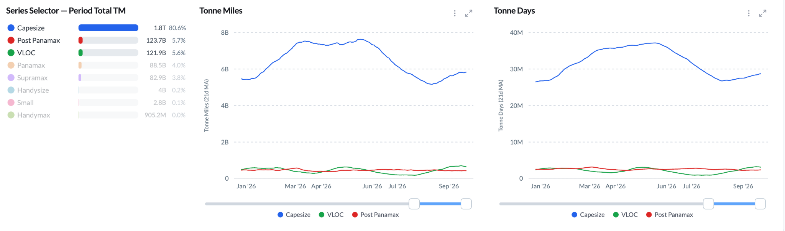
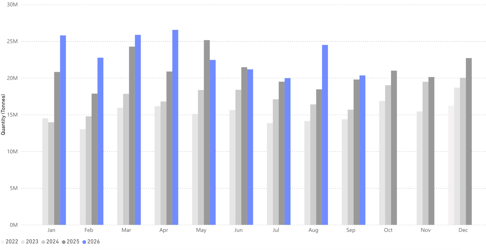
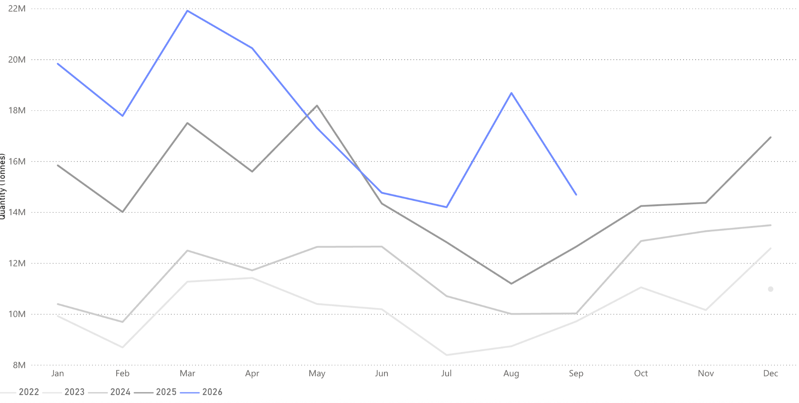

Chinese front-loading is expected to have run its course, pointing to softer bauxite flows in 2026 Q4.
Global bauxite flows increased by 2.8% y/y in September.
Flows arriving in China increased by 21.2% y/y in September
Flows arriving in the UAE fell by over 60.0% in September.
Bauxite arriving in India declined by 37.0% y/y in September, the largest y/y decrease of any month in 2026 so far.

Bauxite flows in September 2026 rose 3% to 20.4 Mt, driven by higher flows from Guinea. Flows fell m/m, but this was expected as September falls within the wet season, which typically reduces the ability of material to flow out of the ports. Compared to September 2025, flows from Guinea increased by over 20%.
China received a surge of seaborne bauxite inflows during September, reaching 19.7 Mt, up over 21% from the same period a year earlier. Disruptions to shipping norms in the Arabian Gulf have continued to affect bauxite arrivals in the UAE, and some regional processing facilities are operating below normal utilization levels, leading to a 60% drop in bauxite arrivals in September 2026.
India has been a key landing spot for seaborne bauxite that could not reach the Arabian Gulf, with Q1 and Q2 arrivals well ahead of the previous year. 2026 Q3 finished with a decrease y/y of 13.8%. This was driven by several factors, such as adequate stocks not requiring additional material and monsoons affecting domestic logistics operations.

The outlook for global bauxite flows is softer in Q4 2026, with Guinea’s export restrictions expected to constrain shipments in the final months of the year. In June, Guinea introduced an annual export quota of 150 Mt, 18% below 2025 levels. However, Signal Ocean data show Guinean bauxite exports up 21% year-to-date, implying that shipments will need to slow materially in Q4.
Demand growth elsewhere is unlikely to offset this reduction. India remains well supplied, limiting the need for stronger year-on-year imports, while persistent regional tensions and disruption are expected to constrain demand recovery in the Arabian Gulf. Chinese demand should remain comparatively resilient, but significant upside appears limited: bauxite arrivals were flat year-on-year in Q3, suggesting little underlying growth in import requirements. With Guinea accounting for the majority of China’s imported bauxite, lower Guinean loadings are likely to translate into weaker Chinese arrivals, although existing inventories and cargoes already in transit may cushion the initial impact. Overall, the balance of risks points to softer global bauxite flows in Q4.

Global bauxite flows are expected to soften in Q4 as Chinese front-loading eases and Guinea’s export restrictions begin to constrain supply. September’s surge in Chinese arrivals contrasts with weakening demand across India and the Arabian Gulf, where adequate stocks and ongoing regional disruption limit the potential for a recovery. With Indian inventories well supplied and Gulf processing activity subdued, neither market is likely to absorb significantly more seaborne material in the coming months. China should remain the principal destination for global bauxite, but flat year-on-year arrivals in Q3 suggest limited scope for further demand growth. Although cargoes already in transit and existing inventories may cushion the initial impact, lower Guinean loadings are likely to weigh on arrivals towards year-end. Consequently, the balance of risks points to weaker global flows and reduced Capesize tonne-mile demand in Q4.
Data Source:Signal Ocean Platform